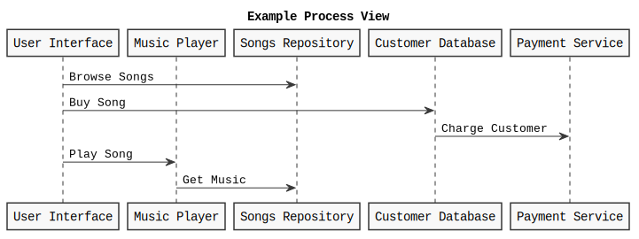

Getting started
You will use Markdown and PlantUML to describe a software architecture model about your own project.
This document will grow during the semester as you sketch and refine your software architecture model.
When you are done with each task, please push so we can give you feedback about your work.
We begin by selecting a suitable project domain.
1. Domain Selection
Submit the name and brief description (about 100 words) of your domain using the following vision statement template:
For [target customers]
Who [need/opportunity/problem]
The [name your project]
Is [type of project]
That [major features, core benefits, compelling reason to buy]
Unlike [current reality or competitors]
Our Project [summarize main advantages over status quo, unique selling point]
Please indicate if your choice is:
- a project you have worked on in the past (by yourself or with a team)
- a project you are going to work on this semester in another lecture (which one?)
- a new project you plan to build in the future
- some existing open source project you are interested to contribute to
The chosen domain should be unique for each student.
Please be ready to give a 2 minute presentation about it (you can use a slide but it's not necessary)
Project Name: Local Guide
Project Type:
Vision Statement:
For [target customers] Youth, people under 30 years, essentially newcomers who are planning to shift to Lugano
Who [need/opportunity/problem]
Google maps exists, but it exhibits a very global outlook on everything. You might see a lot of supermarkets in the search list, but what about the cheapest one? Or the one with the best quality? Results are vast, but often not very precise. Not only that, Google searches can get messy, require a lot of memory retention on users part, for someone who has never set foot in foregin land - settling down can become a nightmare. Having observing students on various groups and forums, despite the vast amount of info available on the internet, many people remain clueless about the most basic needs, which in fact are the most important ones. For that purpose,such apps are the need of the hour, as the summarize the exact information an individual may require.
The Local Guide
Is [type of project] a mobile application
That [major features, core benefits, compelling reason to buy]
Features:
- Distinct categories for each necessity, : transportation, clothes, furniture, shopping, medical, financial,work related etc
- Basic info for every category will be listed, most common banks, mobile network providers, waste management rules etc
- All categories have the best option listed for them, and links provided for more additional info
- Language mode so users are able to read at their own comfort
- Filters for every option based on: prices, distance, quality ratings (given by the users)
- Users can compare prices of items between two shops
- Users will be offered incentives, discounts to motivate them to review places visited by them more
- As a future prospect: to add modes in the app, traveler and new settler mode: to help personalize the users experience
Why this app?
Shifting to a new country is a very different experience, something that no one can ever be fully well prepared for - what more could someone yearn for than a curated view of the best options for your basic amenities? Local Guide gets you exactly that - be it anything you want to know, best insurance, best bank to open an account in, cheap shopping options - everything is there in the app. Everyone knows the big names, but what the local shops, that don't turn up in the google search results, that actually keep relevant stuff - is what this app focuses on.
Unlike [current reality or competitors] Google Maps
Our Project [summarize main advantages over status quo, unique selling point] More localized view of things, considering a students point of view - keeping in mind their budget and all the basic amenities that one needs in a new place. Removes the need to search for multiple things one at a time, all the information is available for you in one single app
Additional Information:
This is a new project I plan on implementing in the future.
2. Architectural Decision Records
Software architecture is about making design decisions that will impact the quality of the software you plan to build.
Let's practice how to describe an architectural decision. We will keep using ADRs to document architectural decisions in the rest of the model.
Use the following template to capture one or more architectural design decisions in the context of your project domain
Architectural Decision Record Template
ADR #0 (Template)
- What did you decide?
Give a short title of solved problem and solution
- What was the context for your decision?
What is the goal you are trying to achieve?
What are the constraints?
What is the scope of your decision? Does it affect the entire architecture?
- What is the problem you are trying to solve?
You may want to articulate the problem in form of a question.
- Which alternative options did you consider?
List at least 3 options
- Which one did you choose?
Pick one of the options as the outcome of your decision
- What is the main reason for that?
List the positive consequences (pros) of your decision:
- quality improvement
- satisfaction of external constraint
If any, list the negative consequences (cons)
- quality degradation
ADR 1 : Implementation of Offline Mode
- What did you decide?
Database: Realm Database
- What was the context for your decision?
The main aim of this decision is to find the most beneficial and optimal solution that takes into consideration the functionalities of the Local Guide app. The main requirement that is into focus, is that the data and the user interface of the application should be made available to the user at all times,with or without network connection.
What is the goal you are trying to achieve?
Allow users to access all the UI and information of the app offline.
What are the constraints?
Limitation on a single string's length.
What is the scope of your decision? Does it affect the entire architecture?
The decision impacts the entire architecture as the selection of the database is of prime importance, because it will be the main storage for all the data required for the mobile app.
- What is the problem you are trying to solve?
How can I give the users the benefit of accessing the information at all times?
- Which alternative options did you consider?
- SQLite Database
- CoreData
- Realm Database
- Which one did you choose?
Realm Database
- What is the main reason for that?
It fulfills the main purpose of the application, to give users the feature to access all the information even when offline, in scenarios where there is no access to data or Wifi and also it is fully compatible with Java, which will be used to develop the mobile app.
List the positive consequences (pros) of your decision:
- Essentially designed for offline use as it can handle the unpredictability concerning mobile apps, such as lost connections, devices being shut down at unfavorable timings and so on. As it is offline first, it is always read from and written to the local database and not over the network.
- As this is a local guide app, the most important component will the keeping the UI in sync, realm used live objects which always reference the most up-to-date data on disk when accessed.
- As it runs on the client devices, storing, accessing and updating the data is simple.
If any, list the negative consequences (cons)
- As Realm offers many features, it consequently requires a bit more effort for implementation.
ADR 2 : Programming Language
- What did you decide?
Language: Java
- What was the context for your decision?
The main purpose of this decision was to find the suitable programming language that will be compatible with the database selected in the previous decision.
What is the goal you are trying to achieve?
Compatibility with database and development of mobile app.
What is the scope of your decision? Does it affect the entire architecture?
The decision applies to the entire project and is of upmost importance.
- What is the problem you are trying to solve?
How can we find a suitable language that interoperates with the chosen database?
- Which alternative options did you consider?
- Kotlin
- Dart
- C++
- Java
- Which one did you choose?
Java
- What is the main reason for that?
Java has one of the most intensive support available, which makes it better for the team to develop the application. Plus, as the project requires several other API'S such as geo location services,language translators, database functions, java fulfills the goal.
List the positive consequences (pros) of your decision:
- Versatile to integrate distinctive apps and functions
- Secure environment for design and development
- Has a lot of built in tools and rich set of library.
If any, list the negative consequences (cons)
- Takes longer time to run
ADR 3 : Monetization Model
- What did you decide?
Model: Combination of In app purchases and Sponsorship
- What was the context for your decision?
The purpose to be looked into is how will the app be monetized after its post deployment stage.
What is the scope of your decision? Does it affect the entire architecture?
The scope of this decision extends to the post deployment stage of the application
- What is the problem you are trying to solve?
What will be the revenue generation strategy of the app?
- Which alternative options did you consider?
- In-App Advertising
- Pay to download apps
- Paywalled Content
- Transactions Commissions
- Subscriptions
- In app purchases
- Which one did you choose?
Combination of the subscription and in app purchases model.
- What is the main reason for that?
The reason for selecting the combination is to divide the monetization into two different strategies, as one strategy can often prove to become outdated after some time, or not favorable for the business.
List the positive consequences (pros) of your decision:
- In-app purchases help in promotions of the application's unique functionalities
- Subscriptions are beneficial to users in the long run, which in turn increase good word of mouth for both the app and the businesses connected with it
- Reduced costs of acquiring new customers.
If any, list the negative consequences (cons)
- The revenue generation process could be a bit slow and time consuming, as it takes time to build the loyalty of customers.
3. Quality Attribute Scenario
Pick a scenario for a specific quality attribute. Describe it with natural language.
Refine the scenario using the following structure:
Stimulus: condition affecting the system
Source: entity generating the stimulus
Environment: context under which stimulus occurred (e.g., build, test, deployment, startup, normal operation, overload, failure, attack, change)
Response: observable result of the stimulus
Measure: benchmark or target value defining a successful response
Example Scenario
Quality: Recoverability
Scenario: In case of power failure, rebooting the system should take up to 20 seconds.
Local Guide Scenarios
Quality: Availability
Scenario: In case of loss of network connectivity on the users side, the system is supposed to fetch the required data from realm, and sync it with the interface to be displayed to the user.
Quality: Modifiability
Scenario: Developer wants to update details in the database for a particular category

Quality: Functionality
- This is a Functionality use case.
Scenario: System stores the browsing details of the user as preferences within the columns category_id and shop_name in the database.
Quality: Usability
Scenario: If a new user faces issues in operating the application, the system suggests the help button to them, and operation afterwards going through the help shouldn't take more than 3 minutes.
Quality: Interoperability
- Could also be classified as Modularity, Reusability or Composability
Scenario : The user selects the directions button for a particular shop, the app should be able to correctly map the location to the place selected by the user and display it on google maps.

Quality: Security
Scenario: Have the connected authentication api be called at the time of login into the application by the user.
Quality: Changeability
Scenario: Addition of a new payment processing method for the in app purchases.
4. Quality Attribute Tradeoff
Pick a free combination of two qualities on the map and write your name to claim it.
Then write a short text giving an example for the tradeoff in this assignment.
Portability vs. Performance (Example)
Developing an app natively for each OS is expensive and time consuming, but it benefits from a good performance. Choosing a cross-platform environment on the other hand simplify the development process, making it faster and cheaper, but it might suffer in performance.
Trade-offs
Extensibility and Design Consistency
In order to keep the operations simplified and easier to identify for the users, a same design pattern needs to be maintained, across all the different screens of the application - so that users do not get confused when trying out different alternatives in the app. Keeping design consistent does hold up customer’s expectations but for future prospects, growing the architecture further will put a lot of constraints on the development of the app and more time and effort in implementation.
Customizability and Composability
Creating a lot of customizations for the users in the application will make the app more useful and assist them in more advanced levels, but it would require many sub components and interconnections within the app which would lead to utilization of a lot of resources and increment of development costs.
Adaptability and Performance
As an application that works as a guidebook for the users, one of the prime advantages is that it can be highly adaptable to the user’s preferences, interests, and new trends in the market, but as the complexity increases, it will overload the development process, leading to possible reductions in performance.
Which kind of performance are you referring to? the one of the overloaded developers? or the one of the resulting adaptable system?
5. Feature Modeling
In the context of your chosen project domain, describe your domain using a feature model.
The feature model should be correctly visualized using the following template:


If possible, make use of all modeling constructs.
6. Context Diagram
Prepare a context diagram to define the design boundary for your project.
Here is a PlantUML/C4 example to get started.
Make sure to include all possible user personas and external dependencies you may need.
7. Component Model: Top-Down
Within the context of your project domain, represent a model of your modular software architecture decomposed into components.
The number of components in your logical view should be between 6 and 9:
- At least one component should be further decomposed into sub components
- At least one component should already exist. You should plan how to reuse it, by locating it in some software repository and including in your model the exact link to its specification and its price.
- At least one component should be stateful.
The logical view should represent provide/require dependencies that are consistent with the interactions represented in the process view.
The process view should illustrate how the proposed decomposition is used to satisfy the main use case given by your domain model.
You can add additional process views showing how other use cases can be satisfied by the same set of components.
This assignment will focus on modularity-related decisions, we will worry about deployment and the container view later.
Here is a PlantUML example logical view and process view.

Logical View
What is the role of the Browsing component? Why is it different than the UI?
Why are the sub-components chained together?
Why are Services connected with dependencies when there are no interactions with them in any process view?
Also PaymentGateway is never used in any process view.
Why the API doesn't connect to the database? Is it the Google Maps API? or the API of your architecture?
Process Views
Use case 1 : User operates the application
Use Case 2 : User makes a purchase within the application
Use Case 3 : Subscription process in the application
Use case 4 : Selection of App Mode (Traveller/Settler) by the User
8. Component Model: Bottom-Up
Within the context of your project domain, represent a model of your modular software architecture decomposed into components.
To design this model you should attempt to buy and reuse as many components as possible.
In addition to the logical and process views, you should give a precise list to all sources and prices of the components you have selected to be reused.
Write an ADR to document your component selection process (indicating which alternatives were considered).
Logical View
Price and specification of components
Material Design UI toolkit for component User Interface
Price: free
Specs: https://material.io/components?platform=android
Firebase for stateful component Database
Price: free at start but gradually increases if application is scaled up
Specs :
- https://firebase.google.com/docs/android/setup
- https://firebase.google.com/docs/database/android/start
- https://firebase.google.com/
Payment Gateway : Stripe
https://github.com/firebase/functions-samples/tree/main/stripe
Process Views
Use case : User operating the application with all of its functionalities
Use case 2 : User creating check-in request in Bookings component
ADR 1 : Selection of UI toolkit
- What did you decide?
UI Toolkit : Material Design
- What was the context for your decision?
The aim of this decision is to find the most optimal solution so that the development time for the user interface can be reduced considerably
What is the goal you are trying to achieve?
Design an interface that is appealing to the users and consumes less work hours.
What is the scope of your decision? Does it affect the entire architecture?
The decision only impacts the look and feel of the mobile app
- What is the problem you are trying to solve?
How can a developer create the most user friendly app with minimal effort and less code?
- Which alternative options did you consider?
- Material Design
- Jetpack compose
- Which one did you choose?
Material Design
- What is the main reason for that?
It comprises all the features that will be implemented for the application, and as the app caters to the tourism industry, it needs to have an aesthetic appeal, and that particular purpose is fulfilled by Material’s pre-written code for different types of UI components.
List the positive consequences (pros) of your decision:
- Reduction of code, which would otherwise increase the workload if hardcoded in java
- As it is developed by Google, makes it more easier to integrate with api’s efficiently
ADR 2 : Selection of a different database
- What did you decide?
Firebase
- What was the context for your decision?
The goal of this decision was to find another database which offers all the features as the previously selected one (Realm Database), and offers a method to integrate the Security component of the app within the database itself.
What is the scope of your decision? Does it affect the entire architecture?
As the database is the main component dealing with storage and querying, this decision impacts the entire structure of the application
- What is the problem you are trying to solve?
How can the selection of the database be maneuvered in such a way that it handles the security component and effortless integration with Google APIs?
- Which alternative options did you consider?
- Firebase
- Cloud Firestore
- Elasticsearch
- Which one did you choose?
Firebase
- What is the main reason for that?
The main purpose that will be served by firebase is integration of the security component within itself, and also as the developer has already experience with this technology, it will be less time consuming as compared to the previous decisions of Realm Database, which required everything to be learned from scratch.
List the positive consequences (pros) of your decision:
- As a Google Cloud service, it also gives you access to other Google products and features, in this case the UI toolkit and api
- When the app is linked with Firebase, there is no need for creation of a separate login interface, as its built-in login UI can be utilized to sign users into the app
9. Interface/API Specification
In this iteration, we will detail your previous model to specify the provided interface of all components based on their interactions found in your existing process views.
choose whether to use the top down or bottom up model. If you specify the interfaces of the bottom up model, your interface descriptions should match what the components you reuse already offer.
decide which interface elements are operations, properties, or events.
Get started with one of these PlantUML templates, or you can come up with your own notation to describe the interfaces, as long as it includes all the necessary details.
The first template describes separately the provided/required interfaces of each component.
The second template annotates the logical view with the interface descriptions: less redundant, but needs the logical dependencies to be modeled to show which are the required interfaces.
API Specification:
Local Guide component refers to the database created inside the Firebase console.
Open API Description

10. Connector View
Extend your existing models introducing the connector view

For every pair of connected components (logical view), pick the most suitable connector. Existing components can play the role of connector, or new connectors may need to be introduced.
Make sure that the interactions shown in the process views reflect the primitives of the selected connector
When describing the interaction with a connector in the process view, please use the primitives of the specific type of connector you have introduced.
For example the LG tuple space should interact with in/out/read instead of retrieve sub category, send request for coordinates.
It is unusual for connectors to directly connect between themselves without any intermediate component.
The process view indicates a direct interaction between Stripe and the Local Guide (details stored under relevant user id) which is not modeled in the connector view
In general the process view should be modeled using a more technical language to describe the content of the messages as opposed to natural language. This would make it much easier to map the connector primitives to the represented interactions between component/connectors.
The ADR do not discuss the choice of connector, but as in the previous assignment they explain why one API was selected out of many alternative ones. This is outside the scope of the current assignment. We expected here to consider options such as: call, message queue, shared database, tuple space.
New Connectors
ConnectAPI which stands for Stripe Connect, which is essentially a platform that enables specific users of the app, targetted towards shop owners and online marketplaces which will enable them to get paid via stripe. On top of that it offers owners the functionality of tools such as CRM analytics.
Transport API is the local Swiss Public Transport API, which covers public transport within Switzerland. The API uses a web service provided by search.ch. It has resources for locations, connections, station board etc.
Specs:
https://transport.opendata.ch/docs.html
https://timetable.search.ch/api/help
Existing Connectors
- REST API is the Firebase REST API, which will be used for all the calls between the components.
Process Views
Use case 1: Operation using the Transport API
Use case 2: Operation using Stripe Connect API
ADR 1: Selection of API connector
- What did you decide?
API as a connector
- What was the context for your decision?
The goal is to fix the mismatch for the transport sub component in the UI.
What is the scope of your decision? Does it affect the entire architecture?
It affects only the user interface of the application, as transport is a sub component in it
- Which alternative options did you consider?
- API connector
- A shared database with information on transport
- tuple with different transport functionalities mapped inside of it
- Which one did you choose?
API connector
- What is the main reason for that?
The main reason for this selection is primarily the mismatch between the transport sub component of the interface,as there were no relevant shared databases as such to get the information, as for now the app is restricted to transportation within switzerland, and no other type of connector is valid for the interaction I wanted to show, so I decided to go ahead with the transport api which provides public transport within Switzerland. The API uses a web service provided by search.ch
List the positive consequences (pros) of your decision:
- Since the api connector has the information for transport specific to switzerland, it helps to narrow down the work for the developer and eliminates the need to create a new component from scratch.
- Handles the mismatch between the component functionality.
11. Adapters and Coupling
- Highlight the connectors (or components) in your existing bottom-up design playing the role of adapter. (We suggest to use the bottom-up design since when dealing with externally sourced components, their interfaces can be a source of mismatches).
- Which kind of mismatch** are they solving?
- Introduce a wrapper in your architecture to hide one of the previously highlighted adapters
- Where would standard interfaces play a role in your architecture? Which standards could be relevant in your domain?
- Explain how one or more pairs of components are coupled according to different coupling facets
- Provide more details on how each adapter solves the mismatches identified using pseudo-code or the actual code
- How can you improve your architectural model to minimize coupling between components? (Include a revised logical/connector view with your solution)
** If you do not find any mismatch in your existing design we suggest to introduce one artificially.
Hints
(1) Should we find cases where two components cannot communicate (and are doing it wrongly) and highlight they would need an adapter?, or cases where we have already a "component playing the role of adapter in the view" and highlight only the adapter?
Both are fine. We assumed that if you draw a dependency (or a connector) the interfaces match, but if you detect that the components that should communicate cannot communicate then of course introduce an adapter to solve the mismatch
(2) Please show the details about the two interfaces which do not match (e.g., names of parameters, object structures) so that it becomes clear why an adapter is needed and what the adapter should do to bridge the mismatch
(5-6) These questions are about the implications on coupling based on the decisions you documented in the connector view. Whenever you have a connector you couple together the components and different connectors will have different forms of coupling
For example, if you use calls everywhere, do you really need them everywhere? is there some pair of components where you could use a message queue instead?
Regarding the coupling facets mentioned in question 5. You do not have to answer all questions related to "discovery", "session", "binding", "interaction", "timing", "interface" and "platform" (p.441, Coupling Facets). Just the ones that you think are relevant for your design and by answering them you can get ideas on how to do question 6.
Adapter in bottom-up Model
The bottom-up model has changed from its previous version as in the Connector view assignment, Transport componenent was removed from being the sub component in the User Interface and now will be an external componennt connected to the interface with the relevant api acting as the adapter.
The three adapters already functional are:
- Firebase API
- Transport API
- Stripe API
Mismatch solved
The name of the functions that will be resolved in the mismatch are listed in the code below.
- Firebase API served as the main adapter for coordinating the calls between the user interface and the database.
The set of functions performed at the user interface side will be something as follows:
function requestCategories function getLocations function requestStationDetails function requestOptions function requestPlaces function requestConnections function sendQueries function sendPaymentRequest function getPlacesNearMe
All of these functions will be a set of inputs given by the user, and the api adapters include the set of functions that help perform the specific response for each of these function sets.
Transport API solves the mismatch of the mobile app having transport functionality within itself(booking transport around swiss),the api directs the user to the trnsprt.ch, through which they can search the conenctions between the desired locations.
Using Stripe api as the adapter, it solves the mismatch by connecting the user interface to external payment gateway Stripe.
Wrapper
Please rewire the wrapper to use the following structure:
@startuml
interface External as I
component Wrapper {
component Adapter
Adapter - I
component Incompatible
interface Internal as i
Incompatible - i
Adapter --( i
}
@enduml
The Adapter component is missing from your model
Standard Interfaces
Considering the standard interfaces required in the tourism domain,almost all of the components of the bottom-up model conform to the most widely used interfaces when designing of such an application. So for example, in the category of platforms- mobile apps are more in demand than websites/web apps, and the widely used databases for such domains include: Firebase, MySQL, SQLite, MongoDB etc. Earlier in the top-up model, unconventional databases (like RealmDB) were being used, but the model that currently stands is refined to set of standards defined.
Vague references: "most widely used interfaces", "most acceptable" -> which ones exactly?
Coupling Facets
Platform Independence
The architecture essentially is platform independent, as the database being used for the application is Firebase, which has support for quite a lot of languages: java, swift, kotlin etc. and also for both the platforms: web and android. In the future, if the implementation will have to be shifted to another language, the client side could only notice slight changes in the UI, but the internal functionality will remain the same.
Interaction
The interaction between user and the external components cannot be indirect. Considering the first case, the user interface makes use of the firebase rest api which plays the role of an adapter pulling data from firebase and displaying to the end user.
Session
The interactions between the user and the app in general, does not depend on the previous selections made by the user, as there is no explicit save of user history, unless user turns on the preferences option in the settings.
Reads well
Pseudo code
This is too much code with very little explanation. It is not clear at all which type of mismatch is the code solving. First describe the two interfaces, explain why they do not match and then the code can show how the adapter solved the mismatch.
Adapter Transport API
GET URL = 'https://timetable.search.ch/api/'
SET ClientIpAddress
SET ClientUserAgent
function sendAndParseQuery(query) \\parses the query from the client side, fetches the result on the timetable.ch link
{
response = sendQuery(query)
if (response =isServerError()) {
throw Exception(‘'Server error from timetable.search.ch: '.response->getStatusCode().' '.response->getReasonPhrase());
}
content = response->getContent();
result = json_decode(content);
if (response->getStatusCode() == 429) {
throw new HttpException(429, 'Rate limit error from timetable.search.ch: '.content);
.
.
.
return result;
}
function sendQuery(query, url = self::URL)
{
formRequest = query->toFormRequest();
formRequest->setField('ip_address', this->clientIpAddress);
formRequest->setField('user_agent', this->clientUserAgent);
return this->browser->send(formRequest);
}
function findConnections(ConnectionQuery) \\ performs the response action for user asking for connections between two locations
{
result = this->sendAndParseQuery(query);
connections = [];
from = null;
to = null;
stations = [
'from' => [],
'to' => [],
];
result = [
'connections' => connections,
'from' => from,
'to' => to,
'stations' => stations,
];
return result;
}
function findLocations(LocationQuery query) \\ performs response action for user asking for locations on the map
{
result = this->sendAndParseQuery(query);
locations = [];
foreach (result as location) {
locations[] = Entity\LocationFactory::createFromJson(location);
}
return locations;
}
function getStationBoard(StationBoardQuery query) \\performs response action for user asking for station details
{
result = this->sendAndParseQuery(query);
station = Station::createStationFromJson(result->stop);
journeys = [];
if (result->connections) {
foreach (result->connections as connection) {
journey = Entity\Schedule\StationBoardJourney::createFromJson(connection, null);
journey->stop->station = station;
journeys[] = journey;
}
}
stationboard = ['station' => station, 'stationboard' => journeys];
return stationboard;
}
}
Adapter Firebase API
Getting categories:
function getAllCategories = async (req: Request, res: Response) => {
try {
function allCategories = await db.collection('Categories').get()
return res.status(200).json(allCategories.docs)
} catch(error) { return res.status(500).json(error.message) }
}
export { addCategory, getAllCategories }
Getting places:
function findPlace(string input, string inputType, array = []) \\ performs response action for user requesting places
{
response = makeRequest(self::FIND_PLACE, )
return convertToCollection(response, 'candidates')
}
function nearbySearch(string location, string radius = null, array = []) \\ performs response action for user requesting places near their location
{
response = makeRequest(self::NEARBY_SEARCH_URL, )
return convertToCollection(response, 'results')
}
function placeDetails(string placeId, array = []) \\ performs response action for user requesting places
{
response = makeRequest(self::DETAILS_SEARCH_URL, )
return convertToCollection(response)
}
function getOptions(array , string method = 'get') \\gets response for user requesting options
{
options = [
'query' => [
'key' => key,
],
]
if (method == 'post') {
options = array_merge(['body' => json_encode()], options)
} else {
options['query'] = array_merge(options['query'], )
}
options['http_errors'] = false
if (!empty(headers)) {
options['headers'] = headers
}
return options
Improvement of Model
I believe that the current model of the system is already exhibiting minimized coupling, the user interface has only two external dependencies, the database,payment gateway and transport. However in the payment option, instead of having the necessary adapter connect api (which enables creation of custom accounts in Stripe), this option can be kept optional thus leaving with only one api that is the Stripe API acting as the adapter.
Why do you write that the Stripe API acts as an adapter? What are the two interfaces which do not match and thanks to the Stripe API can successfully communicate?
12. Physical and Deployment Views
a. Extend your architectural model with the following viewpoints:
Physical or Container View
Deployment View
Your model should be non-trivial: include more than one physical device/virtual container (or both). Be ready to discuss which connectors are found at the device/container boundaries.
b. Write an ADR about which deployment strategy you plan to adopt. The alternatives to be considered are: big bang, blue/green, shadow, pilot, gradual phase-in, canary, A/B testing.
c. (Optional) Prepare a demo of a basic continuous integration and delivery pipeline for your architectural documentation so that you can obtain a single, integrated PDF with all the viewpoints you have modeled so far.
For example:
- configure a GitHub webhook to be called whenever you push changes to your documentation
- setup a GitHub action (or similar) to build and publish your documentation on a website
Physical view
Deployment View
ADR for Deployment Strategy
- What did you decide?
Pilot
- What is the problem you are trying to solve?
What will be the most suitable deployment strategy for an app catering to the needs of a particular target audience locally?
- Which alternative options did you consider?
- Pilot
- Canary
- A/B Testing
- Gradual Phase in
- Which one did you choose?
Pilot
- What is the main reason for that?
The pilot is somewhat closely related to the big bang appraoch, but offers a slight different insight. With this strategy, instead of going live all at once, the application is deployed to a small and targeted group of users who can use the system in a controlled environment. This helps to gather user feedback, make changes and adjustments and improve the overall quality of the application.
- List the positive consequences (pros) of your decision:
- If there are problems in the application, they are easier to catch and rectify if deployed initially to a limited set of users
- A bit cheaper than having multiple versions in production, as only one version is in usage.
13. Availability and Services
The goal of this week is to plan how to deliver your software as a service with high availability.
- If necessary, change your deployment design so that your software is hosted on a server (which could be running as a Cloud VM). Your SaaS architecture should show how your SaaS can be remotely accessed from a client such as a Web browser, or a mobile app
- Sketch your software as a service pricing model (optional)
- How would you define the availability requirements in your project domain? For example, what would be your expectation for the duration of planned/unplanned downtimes or the longest response time tolerated by your clients?
- Which strategy do you adopt to monitor your service's availability? Extend your architecture with a watchdog or a heartbeat monitor and motivate your choice with an ADR.
- What happens when a stateless component goes down? model a sequence diagram to show what needs to happen to recover one of your critical stateless components
- How do you plan to recover stateful components? write an ADR about your choice of replication strategy and whether you prefer consistency vs. availability. Also, consider whether event sourcing would help in your context.
- How do you plan to avoid cascading failures? Be ready to discuss how the connectors (modeled in your connector view) impact the reliability of your architecture.
- How did you mitigate the impact of your external dependencies being not available? (if applicable)
14. Scalability
Now that your architecture delivers your software as a service, let's redesign it so that it can scale!
Pick one scalability dimension: number of clients, size of input, size of state, number of dependencies
How well does your architecture scale along the chosen dimension? Where do you expect the bottleneck to be?
Modify your architecture to remove the scalability bottleneck you have identified (show both logical, process and deployment view) - consider whether the API/interface of the bottleneck component should be improved.
Write an ADR regarding the scalability pattern you have introduced.
Write an ADR regarding the issue of component discovery, choosing one of the alternatives: dependency injection vs. directory. Can you identify an existing component playing the role of directory/dependency injection container? Could you give an example of where you would need to add such component to facilitate dynamic component discovery?
15. Flexibility
Only dead software stops changing. You just received a message from your customer, they have an idea. Is your architecture ready for it?
Pick a new use case scenario. Precisely, what exactly do you need to change of your existing architecture so that it can be supported? Model the updated logical/process/deployment views.
Pick another use case scenario so that it can be supported without any major architectural change (i.e., while you cannot add new components, it is possible to extend the interface of existing ones or introduce new dependencies). Illustrate with a process view, how your previous design can satisfy the new requirement.
Change impact. One of your externally sourced component/Web service API has announced it will introduce a breaking change. What is the impact of such change? How can you control and limit the impact of such change? Update your logical view
Open up your architecture so that it can be extended with plugins by its end-users. Where would be a good extension point? Update your logical view and give at least one example of what a plugin would actually do.
Assuming you have a centralized deployment with all stateful components storing their state in the same database, propose a strategy to split the monolith into at least two different microservices. Model the new logical/deployment view as well as the interfaces of each microservice you introduce.